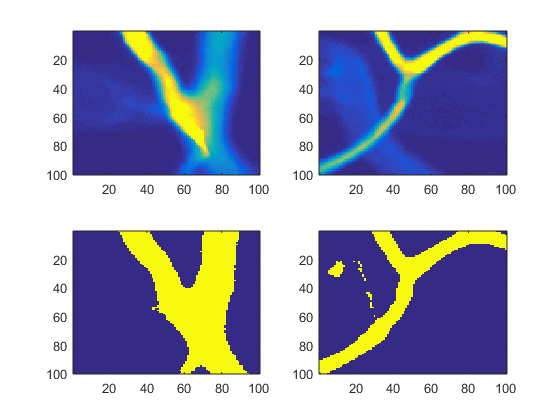

Contents
Stacking
addpath('C:\Users\Anto\Documents\Oxford Uni\4th year\4YP\Capillaries work\Images')
Stack3 = [];
for i=1:1:9
Stack3 = cat(3,Stack3, imread(sprintf('26_z00%d_c003.tif',i)));
end
for i=10:1:42
Stack3 = cat(3,Stack3, imread(sprintf('26_z0%d_c003.tif',i)));
end
pstart=601;
pside=100;
Stack3_p= Stack3(pstart:pstart+pside-1,pstart:pstart+pside-1,5:38);
x=linspace (1,size(Stack3_p,1),size(Stack3_p,1));
y=linspace(1,size(Stack3_p,2),size(Stack3_p,2));
z=linspace (1,size(Stack3_p,3),size(Stack3_p,3));
t=30;
figure
subplot(1,2,1)
fv=isosurface(x,y,z,Stack3_p,t);
p = patch(fv);
p.FaceColor = 'green';
p.EdgeColor = 'none';
daspect([1,1,1])
view(3); axis tight
camlight
lighting gouraud
drawnow
Segmentation (graph cut or level set)
method='thresh';
t=30;
seg_stack3= custom_seg(Stack3_p,method,t);
subplot(1,2,2)
fv=isosurface(x,y,z,seg_stack3,0);
p = patch(fv);
p.FaceColor = 'red';
p.EdgeColor = 'none';
daspect([1,1,1])
view(3); axis tight
camlight
lighting gouraud
drawnow
figure
subplot(2,2,1); imagesc(Stack3_p(:,:,10))
subplot(2,2,2); imagesc(Stack3_p(:,:,30))
subplot(2,2,3); imagesc(seg_stack3(:,:,10))
subplot(2,2,4); imagesc(seg_stack3(:,:,30))
drawnow
keyboard

Skeletonisation
addpath('C:\Users\Anto\Documents\Oxford Uni\4th year\4YP\Matlab functions\Skeleton3D')
skel = Skeleton3D(seg_stack3);
figure
col=[.7 .7 .8];
hiso = patch(isosurface(seg_stack3,0),'FaceColor',col,'EdgeColor','none');
hiso2 = patch(isocaps(seg_stack3,0),'FaceColor',col,'EdgeColor','none');
axis equal;axis off;
lighting phong;
isonormals(seg_stack3,hiso);
alpha(0.5);
set(gca,'DataAspectRatio',[1 1 1])
camlight;
hold on;
w=size(skel,1);
l=size(skel,2);
h=size(skel,3);
[x,y,z]=ind2sub([w,l,h],find(skel(:)));
plot3(y,x,z,'.','Markersize',8,'MarkerFaceColor','b','Color','b');
set(gcf,'Color','White');
view(140,80)
drawnow
computing medial axis..........removed 99% voxels
Radius measuring
addpath('C:\Users\Anto\Documents\Oxford Uni\4th year\4YP\Matlab functions\Test tube')
[ravg,rmax,rmin]=RadiusFinder(seg_stack3, x,y,z, 4, 1);
figure
plot(ravg,'b')
hold on
plot(rmax,'r')
plot(rmin,'g')